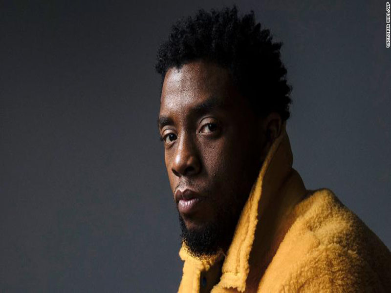
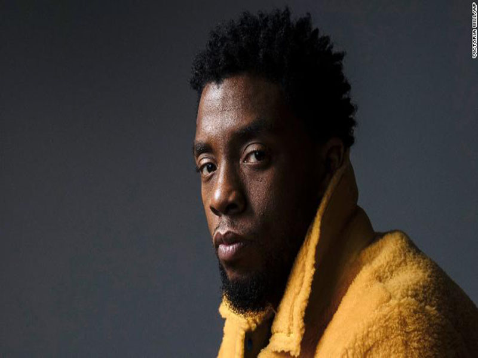

Chadwick Boseman
November 29, 1976 – August 28, 2020


 

“Fearlessness means taking the first step, even if you don’t know where it will take you.
It means being driven by a higher purpose, rather than by applause. It means knowing
that you reveal your character when you stand apart, more than when you stand with the crowd.”
~ Chadwick Boseman
Chadwick Aaron Boseman (November 29, 1976 – August 28, 2020) was an American actor. He played
several historical figures, such as Jackie Robinson in 42 (2013), James Brown in Get on Up (2014), and
Thurgood Marshall in Marshall (2017). His role as the superhero Black Panther in the Marvel Cinematic
Universe films, including Black Panther (2018), made him an international star, winning him an NAACP
Image Award and a Screen Actors Guild Award.
Boseman graduated from T. L. Hanna High School in 1995. In his junior year, he wrote his first play,
Crossroads, and staged it at the school after a classmate was shot and killed. Boseman attended college
at Howard University in Washington, D.C., graduating in 2000 with aBachelor of Fine Arts in directing.
One of his teachers was Phylicia Rashad, who became a mentor. She helped raise funds, notably from her friend
and prominent actor Denzel Washington, so that Boseman and some classmates could attend the Oxford
Mid-Summer Program of the British American Drama Academy in London, to which they had been accepted.
According to film critic Owen Gleiberman in Variety, "Boseman was a virtuoso actor who had the rare ability
to create a character from the outside in and the inside out and he knew how to fuse with a role, etching it in
three dimensions... That's what made him an artist, and a movie star, too. Yet in Black Panther, he also became
that rare thing, a culture hero". Similarly, reviewer Richard Brody in The New Yorker finds the originality of
Boseman's formidable acting technique in his ability to empathize with the interior lives of his characters and
render them on screen as fully and completely belonging to the character. The Guardian critic Peter Bradshaw
wrote of the actor's "beauty, his grace, his style, his presence... These made up Chadwick Boseman's persona
and he became the lost prince of American cinema, glorious and inspirational"
Boseman was diagnosed with stage III colon cancer in 2016, which eventually progressed to stage IV before 2020.
He had never spoken publicly about his cancer diagnosis. During treatment, involving multiple surgeries and
chemotherapy, he continued to work and completed production for several films, including Marshall, Da 5 Bloods,
Ma Rainey's Black Bottom, and others. Boseman died at his home as a result of complications related to colon
cancer on August 28, 2020, with his wife and family by his side.